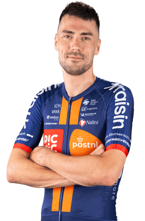

Timo Roosen
Datos personales
- Timo Roosen
- 11/01/1993
- Países Bajos
- TEAM PICNIC POSTNL
- 176

Datos equipos
- Team dsm-firmenich PostNL / Team Picnic PostNL (2024 - presente)
- Jumbo-Visma (2019 - 2023)
- LottoNL-Jumbo (2015 - 2018)
- Rabobank Development Team (2014)
Temporada 2025
| Nombre del dato | Resultado |
|---|---|
| Carrera destacada 1 | Participación en Clásicas de Primavera |
| Carrera destacada 2 | Critérium du Dauphiné (Lanzador/Gregario) |
| Victorias de etapa | 0 victorias |
| Podios conseguidos | 0 podios |
| Rol principal en equipo | Lanzador de sprints / Gregario de llano |
| Grandes Vueltas disputadas | La Vuelta a España 2025 |
Multimedia
Equipo TEAM PICNIC POSTNL en la Vuelta Ciclista a España 2026.